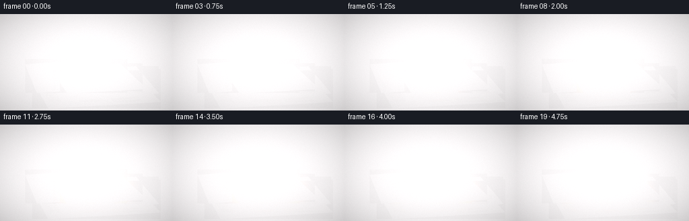
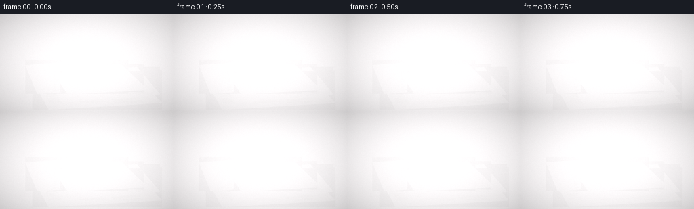

CODING AGENTS AS PIXEL WORLD MODELS
traex/DeepSeek-V4.1-Flash · phygen_145
点击播放 · 原生 RGB 像素
逐轮保存的候选
回放视频、检查图与代码变化。
每份候选均可单独播放。实际图片检查记录在下方工具轨迹中。
候选 01播放与检查图
点击播放 · 原生 RGB 像素

展开代码变化
--- 上一保存版本
+++ 本次保存版本
@@ -0,0 +1,591 @@
+from pathlib import Path
+
+import cv2
+import numpy as np
+from PIL import Image, ImageDraw, ImageFilter, ImageFont
+from scipy.ndimage import gaussian_filter
+
+import artifact_io
+
+
+ROOT = Path(__file__).resolve().parent
+W, H = 256, 144
+SS = 3
+RW, RH = W * SS, H * SS
+FPS = 4
+FRAMES = 20
+RNG = np.random.default_rng(145)
+
+
+def clamp01(x):
+ return np.clip(x, 0.0, 1.0)
+
+
+def smoothstep(edge0, edge1, x):
+ t = clamp01((x - edge0) / (edge1 - edge0))
+ return t * t * (3.0 - 2.0 * t)
+
+
+def font(path, size):
+ return ImageFont.truetype(path, size)
+
+
+SERIF = "/usr/share/fonts/truetype/dejavu/DejaVuSerif.ttf"
+SERIF_BOLD = "/usr/share/fonts/truetype/dejavu/DejaVuSerif-Bold.ttf"
+SANS = "/usr/share/fonts/truetype/dejavu/DejaVuSans.ttf"
+MONO = "/usr/share/fonts/truetype/dejavu/DejaVuSansMono.ttf"
+
+
+def make_paper_texture(seed, header):
+ rng = np.random.default_rng(seed)
+ tw, th = 560, 360
+ base = np.empty((th, tw, 3), dtype=np.float32)
+ base[:] = (214, 205, 180)
+ yy, xx = np.mgrid[:th, :tw]
+ fiber = (
+ np.sin(xx * 0.17 + np.sin(yy * 0.031) * 2.1) * 2.2
+ + np.sin(yy * 0.41 + xx * 0.013) * 1.5
+ + rng.normal(0, 3.0, (th, tw))
+ )
+ base += fiber[..., None]
+ base *= (1.0 - 0.045 * (xx / tw))[..., None]
+ base *= (1.0 - 0.035 * (yy / th))[..., None]
+ image = Image.fromarray(np.uint8(np.clip(base, 0, 255)))
+ draw = ImageDraw.Draw(image)
+
+ ink = (47, 45, 42)
+ faded = (74, 71, 66)
+ draw.rectangle((18, 12, tw - 18, th - 14), outline=(126, 119, 105), width=1)
+ draw.text((28, 14), header, fill=(38, 36, 34), font=font(SERIF_BOLD, 33))
+ draw.line((27, 57, tw - 27, 57), fill=(73, 69, 62), width=2)
+ draw.text((28, 61), "THE WEEKLY RECORD · SATURDAY, OCTOBER 17", fill=faded, font=font(MONO, 10))
+ draw.line((27, 77, tw - 27, 77), fill=(116, 109, 96), width=1)
+
+ cols = [(28, 174), (192, 338), (356, 502)]
+ for ci, (x0, x1) in enumerate(cols):
+ y = 88
+ if ci == 0:
+ draw.text((x0, y), "CITY STORES\nREOPEN AFTER\nLONG REPAIRS", fill=ink,
+ font=font(SERIF_BOLD, 19), spacing=1)
+ y += 66
+ draw.text((x0, y), "Council approves new\nriverfront plans", fill=ink,
+ font=font(SERIF_BOLD, 13))
+ y += 34
+ elif ci == 1:
+ draw.rectangle((x0, y, x1, y + 79), fill=(111, 107, 99))
+ draw.rectangle((x0 + 7, y + 8, x1 - 8, y + 72), fill=(164, 156, 139))
+ draw.ellipse((x0 + 24, y + 16, x0 + 63, y + 58), fill=(102, 99, 91))
+ draw.polygon([(x0 + 10, y + 68), (x0 + 53, y + 34), (x1 - 10, y + 68)],
+ fill=(83, 82, 76))
+ y += 87
+ draw.text((x0, y), "Markets steady as\nharvest begins early", fill=ink,
+ font=font(SERIF_BOLD, 13))
+ y += 34
+ else:
+ draw.text((x0, y), "A QUIET MORNING", fill=ink, font=font(SERIF_BOLD, 15))
+ y += 25
+ draw.text((x0, y), "Clouds clear over the\nharbor by midday", fill=faded,
+ font=font(SANS, 11))
+ y += 37
+
+ while y < th - 22:
+ line_w = int((x1 - x0) * rng.uniform(0.70, 0.98))
+ draw.rectangle((x0, y, x0 + line_w, y + 3), fill=(86, 83, 77))
+ if rng.random() < 0.23:
+ draw.rectangle((x0, y + 7, x0 + int(line_w * 0.65), y + 9),
+ fill=(106, 102, 94))
+ y += 10
+ y += 9
+
+ # Faint age spots, creases, and a torn fold.
+ overlay = Image.new("RGBA", image.size, (0, 0, 0, 0))
+ od = ImageDraw.Draw(overlay)
+ for _ in range(22):
+ x, y = rng.integers(0, tw), rng.integers(0, th)
+ r = int(rng.integers(2, 10))
+ od.ellipse((x - r, y - r, x + r, y + r),
+ fill=(118, 84, 45, int(rng.integers(4, 13))))
+ for x in (tw // 2, 356):
+ od.line((x + rng.integers(-4, 4), 4, x + rng.integers(-4, 4), th - 4),
+ fill=(78, 69, 55, 28), width=2)
+ image = Image.alpha_composite(image.convert("RGBA"), overlay).convert("RGB")
+ return np.asarray(image, dtype=np.uint8)
+
+
+def make_cloth_texture():
+ rng = np.random.default_rng(511)
+ tw, th = 250, 145
+ yy, xx = np.mgrid[:th, :tw]
+ fabric = rng.normal(0, 8, (th, tw))
+ weave = 4.0 * np.sin(xx * 0.95) * np.sin(yy * 0.86)
+ r = 102 + fabric + weave + 13 * np.sin(xx * 0.045 + yy * 0.025)
+ g = 61 + fabric * 0.7 + 7 * np.sin(xx * 0.032 - yy * 0.04)
+ b = 45 + fabric * 0.45 + 5 * np.cos(yy * 0.08)
+ rgb = np.stack([r, g, b], axis=-1)
+
+ # Irregular cloth silhouette with a frayed edge.
+ mask = Image.new("L", (tw, th), 0)
+ md = ImageDraw.Draw(mask)
+ pts = [(16, 25), (48, 9), (98, 14), (148, 6), (206, 18), (239, 45),
+ (231, 85), (244, 123), (203, 136), (155, 129), (113, 140),
+ (67, 126), (20, 112), (7, 75)]
+ md.polygon(pts, fill=255)
+ for _ in range(40):
+ x = int(rng.integers(10, tw - 10))
+ y = int(rng.integers(8, 15)) if rng.random() < 0.5 else int(rng.integers(132, 141))
+ md.line((x, y, x + int(rng.integers(-13, 14)), y + int(rng.integers(-8, 9))),
+ fill=255, width=int(rng.integers(1, 3)))
+ mask_np = np.asarray(mask, dtype=np.float32) / 255.0
+
+ # Woven folds and a charred corner.
+ for x0, amp in [(55, 11), (105, 17), (167, 13), (213, 8)]:
+ fold = np.exp(-((xx - x0 - 9 * np.sin(yy * 0.045)) / 8.0) ** 2)
+ rgb *= (1.0 - 0.24 * fold)[..., None]
+ rgb += (18 * fold)[..., None]
+ char = np.exp(-(((xx - 230) / 23.0) ** 2 + ((yy - 33) / 20.0) ** 2))
+ rgb *= (1.0 - 0.82 * char)[..., None]
+ rgb += np.stack([24 * char, 8 * char, 3 * char], axis=-1)
+ rgb = np.clip(rgb, 0, 255)
+ rgba = np.dstack([rgb, mask_np * 255.0]).astype(np.uint8)
+ return Image.fromarray(rgba, "RGBA")
+
+
+def warp_texture(texture, quad):
+ src = np.asarray(texture)
+ h, w = src.shape[:2]
+ pts = np.float32([[0, 0], [w - 1, 0], [w - 1, h - 1], [0, h - 1]])
+ dst = np.float32(quad)
+ mat = cv2.getPerspectiveTransform(pts, dst)
+ x0 = max(0, int(np.floor(dst[:, 0].min())))
+ y0 = max(0, int(np.floor(dst[:, 1].min())))
+ x1 = min(RW, int(np.ceil(dst[:, 0].max())))
+ y1 = min(RH, int(np.ceil(dst[:, 1].max())))
+ shifted = dst - np.float32([x0, y0])
+ mat = cv2.getPerspectiveTransform(pts, shifted)
+ warped = cv2.warpPerspective(src, mat, (x1 - x0, y1 - y0),
+ flags=cv2.INTER_CUBIC, borderMode=cv2.BORDER_CONSTANT)
+ return warped, (x0, y0)
+
+
+def alpha_paste(canvas, rgba, x, y, opacity=1.0):
+ h, w = rgba.shape[:2]
+ x0, y0 = max(0, x), max(0, y)
+ x1, y1 = min(canvas.shape[1], x + w), min(canvas.shape[0], y + h)
+ if x1 <= x0 or y1 <= y0:
+ return
+ sx0, sy0 = x0 - x, y0 - y
+ patch = rgba[sy0:sy0 + (y1 - y0), sx0:sx0 + (x1 - x0)].astype(np.float32)
+ if patch.shape[2] == 4:
+ a = (patch[..., 3:4] / 255.0) * opacity
+ else:
+ a = np.full((*patch.shape[:2], 1), opacity, dtype=np.float32)
+ canvas[y0:y1, x0:x1] = canvas[y0:y1, x0:x1] * (1.0 - a) + patch[..., :3] * a
+
+
+def build_background():
+ rng = np.random.default_rng(77)
+ yy, xx = np.mgrid[:RH, :RW].astype(np.float32)
+ coarse = gaussian_filter(rng.normal(0, 1, (RH, RW)), 22)
+ medium = gaussian_filter(rng.normal(0, 1, (RH, RW)), 6)
+ grain = rng.normal(0, 1, (RH, RW))
+ coarse /= max(np.std(coarse), 1e-5)
+ medium /= max(np.std(medium), 1e-5)
+
+ # Dark, weathered tabletop with broad wood grain and worn paint.
+ grain_lines = np.sin(yy * 0.075 + 1.8 * np.sin(xx * 0.009) + coarse * 0.8)
+ base = np.empty((RH, RW, 3), dtype=np.float32)
+ base[..., 0] = 28 + 4.2 * coarse + 2.1 * medium + 1.2 * grain + 2.2 * grain_lines
+ base[..., 1] = 27 + 3.5 * coarse + 1.8 * medium + 0.9 * grain + 1.6 * grain_lines
+ base[..., 2] = 24 + 2.7 * coarse + 1.5 * medium + 0.8 * grain
+ base *= np.stack([
+ 0.90 + 0.12 * (yy / RH),
+ 0.88 + 0.13 * (yy / RH),
+ 0.84 + 0.11 * (yy / RH),
+ ], axis=-1)
+
+ # Sparse scratches and old paint flecks.
+ for _ in range(90):
+ x, y = int(rng.integers(0, RW)), int(rng.integers(0, RH))
+ length = int(rng.integers(2, 19))
+ val = rng.uniform(0.8, 3.6)
+ base[y:min(RH, y + 1), x:min(RW, x + length)] += val
+ return base
+
+
+def draw_scene_base():
+ canvas = build_background()
+
+ # Scattered scraps and ash outside the main pile.
+ scrap_rng = np.random.default_rng(801)
+ for _ in range(17):
+ cx = int(scrap_rng.integers(45, RW - 45))
+ cy = int(scrap_rng.integers(90, RH - 25))
+ s = int(scrap_rng.integers(5, 20))
+ ang = scrap_rng.uniform(-0.8, 0.8)
+ pts = np.array([[-s, -s * 0.35], [s * 0.8, -s * 0.55],
+ [s, s * 0.4], [-s * 0.7, s * 0.5]], dtype=np.float32)
+ rot = np.array([[np.cos(ang), -np.sin(ang)], [np.sin(ang), np.cos(ang)]])
+ pts = pts @ rot.T + [cx, cy]
+ shade = int(scrap_rng.integers(62, 105))
+ cv2.fillPoly(canvas, [pts.astype(np.int32)], (shade * 0.82, shade * 0.78, shade * 0.67))
+
+ paper_textures = [
+ make_paper_texture(12, "THE EVENING POST"),
+ make_paper_texture(29, "DAILY TRIBUNE"),
+ make_paper_texture(46, "THE CITY TIMES"),
+ make_paper_texture(63, "THE MORNING NEWS"),
+ make_paper_texture(81, "THE WEEKLY RECORD"),
+ ]
+ quads = [
+ [(143, 293), (574, 246), (717, 393), (215, 423)],
+ [(191, 260), (606, 233), (708, 355), (275, 393)],
+ [(112, 225), (449, 201), (568, 326), (164, 353)],
+ [(267, 239), (535, 220), (636, 319), (324, 346)],
+ [(238, 262), (567, 252), (656, 335), (300, 355)],
+ ]
+ shadows = []
+ for i, quad in enumerate(quads):
+ q = np.asarray(quad, dtype=np.float32)
+ shadow_mask = Image.new("L", (RW, RH), 0)
+ ImageDraw.Draw(shadow_mask).polygon([tuple(p) for p in (q + [8, 11])], fill=190)
+ shadow_mask = shadow_mask.filter(ImageFilter.GaussianBlur(9 + i * 1.5))
+ shadows.append(np.asarray(shadow_mask, dtype=np.float32) / 255.0)
+ shadow = np.maximum.reduce(shadows)
+ canvas *= (1.0 - 0.58 * shadow[..., None])
+
+ for i, (texture, quad) in enumerate(zip(paper_textures, quads)):
+ warped, (x, y) = warp_texture(texture, quad)
+ alpha_paste(canvas, warped, x, y, 0.97)
+ edge = np.asarray([quad[0], quad[1], quad[2], quad[3]], dtype=np.int32)
+ cv2.polylines(canvas, [edge], True, (94 + i * 3, 86 + i * 2, 71 + i * 2),
+ thickness=1, lineType=cv2.LINE_AA)
+
+ # Add a curled, shadowed corner on the top sheet.
+ curl = np.array([[552, 255], [622, 304], [575, 316], [542, 287]], dtype=np.int32)
+ cv2.fillPoly(canvas, [curl], (132, 118, 91))
+ cv2.polylines(canvas, [curl], True, (177, 158, 123), 2, cv2.LINE_AA)
+
+ return canvas
+
+
+def cloth_pose(t):
+ start = np.array([128.0, 39.0])
+ land = np.array([401.0, 286.0])
+ p = clamp01(t / 0.90)
+ ease = 0.55 * p + 0.45 * (p * p * (3.0 - 2.0 * p))
+ center = start + (land - start) * ease
+ center[1] -= 24.0 * np.sin(np.pi * p) * (1.0 - p) ** 0.25
+ angle = -42.0 + 30.0 * ease
+ scale = 0.72 + 0.28 * ease
+ return center, angle, scale, p
+
+
+def cloth_corner(center, angle, scale):
+ local = np.array([69.0, -27.0]) * scale
+ a = np.deg2rad(angle)
+ rot = np.array([[np.cos(a), -np.sin(a)], [np.sin(a), np.cos(a)]])
+ return center + rot @ local
+
+
+def composite_cloth(scene, cloth, t):
+ center, angle, scale, p = cloth_pose(t)
+ cloth_frame = cloth.resize(
+ (max(1, int(cloth.width * scale)), max(1, int(cloth.height * scale))),
+ Image.Resampling.LANCZOS,
+ ).rotate(angle, resample=Image.Resampling.BICUBIC, expand=True)
+ x = int(center[0] - cloth_frame.width / 2)
+ y = int(center[1] - cloth_frame.height / 2)
+
+ # Soft airborne shadow.
+ shadow_alpha = np.asarray(cloth_frame.getchannel("A"), dtype=np.float32) / 255.0
+ sh = np.zeros((RH, RW), dtype=np.float32)
+ h, w = shadow_alpha.shape
+ x0, y0 = max(0, x + 12), max(0, y + 17)
+ x1, y1 = min(RW, x + w + 12), min(RH, y + h + 17)
+ if x1 > x0 and y1 > y0:
+ sh[y0:y1, x0:x1] = shadow_alpha[y0 - y - 17:y1 - y - 17,
+ x0 - x - 12:x1 - x - 12]
+ sh = gaussian_filter(sh, 9)
+ scene *= (1.0 - 0.42 * sh[..., None] * (1.0 - 0.45 * p))
+ alpha_paste(scene, np.asarray(cloth_frame), x, y, 1.0)
+ return cloth_corner(center, angle, scale), p
+
+
+def tongue_mask(xbase, ybase, height, width, lean, sway, phase, seed, t, strength):
+ y0 = max(0, int(ybase - height - 6))
+ y1 = min(RH, int(ybase + 4))
+ x0 = max(0, int(xbase - width * 2.1 - abs(lean) - 10))
+ x1 = min(RW, int(xbase + width * 2.1 + abs(lean) + 10))
+ if x1 <= x0 or y1 <= y0:
+ return None
+ yy, xx = np.mgrid[y0:y1, x0:x1].astype(np.float32)
+ q = clamp01((ybase - yy) / max(height, 1.0))
+ phase2 = phase + t * (8.3 + 1.7 * np.sin(seed))
+ center = (
+ xbase
+ + lean * q
+ + sway * q * np.sin(q * 5.0 + phase2)
+ + 0.42 * sway * q * np.sin(q * 12.0 - phase2 * 0.7 + seed)
+ )
+ width_profile = width * (0.48 + 0.62 * np.sin(np.pi * np.minimum(q * 1.06, 1.0)) ** 0.65)
+ width_profile *= np.maximum(0.0, 1.0 - q) ** 0.18
+ edge = np.abs(xx - center) / np.maximum(width_profile, 0.75)
+ mask = clamp01((1.03 - edge) * 3.3)
+ vertical_fade = smoothstep(1.02, 0.80, q) * smoothstep(-0.04, 0.06, q)
+ flicker = 0.80 + 0.20 * np.sin(yy * 0.19 + phase2 * 1.8 + xx * 0.022)
+ mask *= vertical_fade * flicker * strength
+ return mask.astype(np.float32), (x0, y0, x1, y1), q
+
+
+def color_ramp(q):
+ stops = np.array([0.0, 0.18, 0.42, 0.68, 0.86, 1.0])
+ colors = np.array([
+ [255, 246, 197],
+ [255, 221, 118],
+ [255, 157, 43],
+ [255, 91, 12],
+ [195, 38, 5],
+ [58, 8, 3],
+ ], dtype=np.float32)
+ out = np.empty(q.shape + (3,), dtype=np.float32)
+ for c in range(3):
+ out[..., c] = np.interp(q, stops, colors[:, c])
+ return out
+
+
+def add_fire_tongues(fire, xbase, ybase, height, width, strength, t, seed):
+ rng = np.random.default_rng(seed)
+ tongue_count = max(3, int(3 + width / 5))
+ for j in range(tongue_count):
+ local_strength = strength * rng.uniform(0.56, 1.0)
+ h = height * rng.uniform(0.55, 1.05)
+ w = width * rng.uniform(0.38, 0.68)
+ xoff = rng.normal(0, width * 0.48)
+ lean = rng.normal(0, width * 0.46)
+ sway = rng.uniform(1.4, width * 0.24)
+ phase = rng.uniform(0, np.pi * 2)
+ result = tongue_mask(xbase + xoff, ybase, h, w, lean, sway, phase, seed + j, t, local_strength)
+ if result is None:
+ continue
+ mask, (x0, y0, x1, y1), q = result
+ colors = color_ramp(q)
+ fire[y0:y1, x0:x1] += colors * mask[..., None] * 0.55
+
+ # White-hot base and a narrower yellow core.
+ core = tongue_mask(xbase, ybase, height * 0.60, width * 0.34, 0,
+ width * 0.10, seed * 0.31, seed + 99, t, strength)
+ if core is not None:
+ mask, (x0, y0, x1, y1), q = core
+ color = np.stack([
+ 255 - 55 * q,
+ 230 - 95 * q,
+ 143 - 93 * q,
+ ], axis=-1)
+ fire[y0:y1, x0:x1] += color * mask[..., None] * 0.62
+
+
+def radial_glow(cx, cy, radius, strength):
+ x0 = max(0, int(cx - radius * 2.2))
+ x1 = min(RW, int(cx + radius * 2.2))
+ y0 = max(0, int(cy - radius * 1.7))
+ y1 = min(RH, int(cy + radius * 1.7))
+ yy, xx = np.mgrid[y0:y1, x0:x1].astype(np.float32)
+ dist = np.sqrt(((xx - cx) / radius) ** 2 + ((yy - cy) / (radius * 0.86)) ** 2)
+ g = np.exp(-dist * dist * 1.7) * strength
+ layer = np.zeros((RH, RW, 3), dtype=np.float32)
+ layer[y0:y1, x0:x1, 0] = g * 255.0
+ layer[y0:y1, x0:x1, 1] = g * 104.0
+ layer[y0:y1, x0:x1, 2] = g * 25.0
+ return layer
+
+
+def add_lighting(scene, sources, t):
+ light = np.zeros_like(scene)
+ for src in sources:
+ strength = source_strength(src, t)
+ if strength <= 0:
+ continue
+ cx, cy = src["pos"]
+ light += radial_glow(cx, cy, src["glow"], strength * src["light"])
+ # Screen blend keeps paper texture visible while warming the whole pile.
+ scene[:] = 255.0 - (255.0 - scene) * (255.0 - np.clip(light, 0, 255)) / 255.0
+
+
+def source_strength(src, t):
+ dt = t - src["t_on"]
+ if dt < 0:
+ return 0.0
+ ramp = smoothstep(0.0, 0.55, dt)
+ return ramp * src["power"] * (0.90 + 0.10 * np.sin(t * 9.0 + src["seed"]))
+
+
+def draw_smoke(t):
+ smoke = np.zeros((RH, RW, 4), dtype=np.float32)
+ rng = np.random.default_rng(223)
+ for source_index, source_t in enumerate((0.55, 1.55, 2.05, 2.85, 3.55)):
+ base_x = (402, 340, 484, 435, 278)[source_index]
+ base_y = (264, 297, 292, 247, 319)[source_index]
+ for k in range(10):
+ birth = source_t + k * 0.29 + rng.uniform(-0.05, 0.05)
+ age = t - birth
+ if age <= 0 or age > 2.45:
+ continue
+ x = base_x + rng.normal(0, 8) + age * (18 + rng.uniform(-7, 7)) + 15 * np.sin(age * 2.3 + k)
+ y = base_y - age * (34 + rng.uniform(-8, 9)) - k * 1.4
+ r = 11 + age * 27 + rng.uniform(0, 8)
+ alpha = 0.10 * smoothstep(0.0, 0.45, age) * smoothstep(2.45, 1.15, age)
+ x0, x1 = max(0, int(x - r * 2.1)), min(RW, int(x + r * 2.1))
+ y0, y1 = max(0, int(y - r * 2.1)), min(RH, int(y + r * 2.1))
+ if x1 <= x0 or y1 <= y0:
+ continue
+ yy, xx = np.mgrid[y0:y1, x0:x1].astype(np.float32)
+ dist2 = ((xx - x) ** 2 + ((yy - y) * 0.85) ** 2) / (r * r)
+ puff = np.exp(-dist2 * 1.9) * alpha
+ smoke[y0:y1, x0:x1, 0] += puff * 126
+ smoke[y0:y1, x0:x1, 1] += puff * 121
+ smoke[y0:y1, x0:x1, 2] += puff * 116
+ smoke[y0:y1, x0:x1, 3] += puff
+ smoke[..., 3] = np.clip(smoke[..., 3], 0, 0.46)
+ return smoke
+
+
+def composite_smoke(scene, smoke):
+ a = smoke[..., 3:4]
+ color = smoke[..., :3] / np.maximum(smoke[..., 3:4], 1e-4)
+ scene[:] = scene * (1.0 - a) + color * a
+
+
+def draw_embers(scene, sources, t):
+ rng = np.random.default_rng(930)
+ for si, src in enumerate(sources):
+ if t < src["t_on"] + 0.18:
+ continue
+ count = int(20 + 9 * src["power"])
+ for k in range(count):
+ birth = src["t_on"] + 0.15 + rng.uniform(0, max(0.2, t - src["t_on"] - 0.15))
+ age = t - birth
+ if age < 0 or age > 1.35:
+ continue
+ vx = rng.normal(8, 22)
+ vy = -rng.uniform(42, 95)
+ x = src["pos"][0] + rng.normal(0, src["width"] * 0.65) + vx * age
+ y = src["pos"][1] - rng.uniform(4, 28) + vy * age + 17 * age * age
+ life = 1.0 - age / 1.35
+ if not (2 <= x < RW - 2 and 2 <= y < RH - 2):
+ continue
+ size = max(0.65, 2.2 * life + rng.uniform(0.0, 1.0))
+ xi, yi = int(x), int(y)
+ x0, x1 = max(0, xi - 3), min(RW, xi + 4)
+ y0, y1 = max(0, yi - 3), min(RH, yi + 4)
+ yy, xx = np.mgrid[y0:y1, x0:x1].astype(np.float32)
+ spot = np.exp(-(((xx - x) ** 2 + (yy - y) ** 2) / (size * size * 1.8))) * life
+ scene[y0:y1, x0:x1, 0] += spot * 255
+ scene[y0:y1, x0:x1, 1] += spot * (118 + 105 * life)
+ scene[y0:y1, x0:x1, 2] += spot * 24
+ if age < 0.35:
+ y2 = int(y + 5)
+ if 0 <= y2 < RH:
+ scene[y2, xi, 0] += 85 * life
+ scene[y2, xi, 1] += 32 * life
+
+
+def render_fire(sources, t):
+ fire = np.zeros((RH, RW, 3), dtype=np.float32)
+ for i, src in enumerate(sources):
+ strength = source_strength(src, t)
+ if strength <= 0.01:
+ continue
+ growth = smoothstep(0.0, 1.8, t - src["t_on"])
+ height = src["height"] * (0.45 + 0.75 * growth)
+ width = src["width"] * (0.55 + 0.65 * growth)
+ x = src["pos"][0] + 2.0 * np.sin(t * 4.5 + i)
+ y = src["pos"][1] + 1.5 * np.cos(t * 3.7 + i * 2)
+ add_fire_tongues(fire, x, y, height, width, strength, t, src["seed"])
+ # Inner secondary cluster at wider fires.
+ if width > 16:
+ add_fire_tongues(fire, x + width * 0.43, y + 2,
+ height * 0.72, width * 0.62, strength * 0.66,
+ t + 0.17, src["seed"] + 100)
+ fire = 255.0 - (255.0 - fire) * 0.02
+ fire = gaussian_filter(fire, sigma=(0.75, 0.75, 0))
+ return fire
+
+
+def final_grade(frame):
+ arr = frame.astype(np.float32)
+ # Warm highlights, slightly cool lifted shadows.
+ arr = (arr - 128.0) * 1.075 + 128.0
+ arr[..., 0] += 3.0
+ arr[..., 2] += 1.0
+ yy, xx = np.mgrid[:RH, :RW].astype(np.float32)
+ vignette = 1.0 - 0.20 * (((xx - RW / 2) / (RW * 0.63)) ** 2 +
+ ((yy - RH / 2) / (RH * 0.68)) ** 2)
+ arr *= np.clip(vignette, 0.70, 1.0)[..., None]
+ # Very fine film grain, averaged away during downsampling.
+ grain = RNG.normal(0, 2.3, (RH, RW, 1))
+ arr += grain
+ return Image.fromarray(np.uint8(np.clip(arr, 0, 255))).resize((W, H), Image.Resampling.LANCZOS)
+
+
+def main():
+ scene_base = draw_scene_base()
+ cloth = make_cloth_texture()
+
+ sources = [
+ {"pos": np.array([419.0, 269.0]), "t_on": 0.68, "power": 1.00,
+ "height": 128.0, "width": 20.0, "glow": 82.0, "light": 0.95, "seed": 3},
+ {"pos": np.array([343.0, 301.0]), "t_on": 1.55, "power": 0.88,
+ "height": 94.0, "width": 18.0, "glow": 66.0, "light": 0.73, "seed": 19},
+ {"pos": np.array([493.0, 296.0]), "t_on": 2.05, "power": 0.92,
+ "height": 101.0, "width": 19.0, "glow": 70.0, "light": 0.78, "seed": 37},
+ {"pos": np.array([441.0, 250.0]), "t_on": 2.75, "power": 0.82,
+ "height": 108.0, "width": 17.0, "glow": 62.0, "light": 0.68, "seed": 53},
+ {"pos": np.array([270.0, 322.0]), "t_on": 3.50, "power": 0.72,
+ "height": 74.0, "width": 15.0, "glow": 50.0, "light": 0.55, "seed": 71},
+ {"pos": np.array([552.0, 323.0]), "t_on": 4.05, "power": 0.67,
+ "height": 68.0, "width": 14.0, "glow": 47.0, "light": 0.52, "seed": 89},
+ ]
+
+ frames = []
+ for index in range(FRAMES):
+ t = index / FPS
+ scene = scene_base.copy()
+ corner, flight = composite_cloth(scene, cloth, t)
+
+ # The burning edge is visible while the cloth is still in the air.
+ if t < 0.86:
+ add_lighting(scene, [{
+ "pos": corner, "t_on": 0.0, "power": 0.45,
+ "height": 0.0, "width": 0.0, "glow": 25.0, "light": 0.62, "seed": 1,
+ }], t)
+ else:
+ add_lighting(scene, sources, t)
+
+ composite_smoke(scene, draw_smoke(t))
+
+ # Fire is emitted in front of the paper pile and cloth.
+ fire = render_fire(sources, t)
+ if t < 0.86:
+ flying_fire = np.zeros_like(fire)
+ add_fire_tongues(flying_fire, corner[0], corner[1] + 2,
+ 29 + 22 * flight, 7.5, 0.62 + 0.25 * flight,
+ t + 0.2, 141)
+ flying_fire = gaussian_filter(flying_fire, sigma=(0.55, 0.55, 0))
+ fire = np.maximum(fire, flying_fire)
+ scene += fire
+ draw_embers(scene, sources, t)
+
+ # Thin illuminated smoke directly above the hottest tongues.
+ if t > 1.0:
+ haze = radial_glow(430, 204, 78, 0.11 * smoothstep(1.0, 4.0, t))
+ scene += haze * 0.33
+
+ frames.append(final_grade(np.clip(scene, 0, 255)))
+
+ frame_array = np.stack([np.asarray(frame, dtype=np.uint8) for frame in frames])
+ artifact_io.save(frame_array, ROOT)
+ print(f"Saved {frame_array.shape} to {ROOT}")
+
+
+if __name__ == "__main__":
+ main()
候选 02播放与检查图
点击播放 · 原生 RGB 像素
展开代码变化
--- 上一保存版本
+++ 本次保存版本
@@ -147,7 +147,7 @@
rgb += np.stack([24 * char, 8 * char, 3 * char], axis=-1)
rgb = np.clip(rgb, 0, 255)
rgba = np.dstack([rgb, mask_np * 255.0]).astype(np.uint8)
- return Image.fromarray(rgba, "RGBA")
+ return Image.fromarray(rgba)
def warp_texture(texture, quad):
@@ -270,13 +270,13 @@
def cloth_pose(t):
start = np.array([128.0, 39.0])
- land = np.array([401.0, 286.0])
+ land = np.array([405.0, 294.0])
p = clamp01(t / 0.90)
ease = 0.55 * p + 0.45 * (p * p * (3.0 - 2.0 * p))
center = start + (land - start) * ease
- center[1] -= 24.0 * np.sin(np.pi * p) * (1.0 - p) ** 0.25
- angle = -42.0 + 30.0 * ease
- scale = 0.72 + 0.28 * ease
+ center[1] -= 18.0 * np.sin(np.pi * p) * (1.0 - p) ** 0.35
+ angle = -42.0 + 26.0 * ease
+ scale = 0.72 + 0.31 * ease
return center, angle, scale, p
@@ -340,12 +340,12 @@
def color_ramp(q):
stops = np.array([0.0, 0.18, 0.42, 0.68, 0.86, 1.0])
colors = np.array([
- [255, 246, 197],
- [255, 221, 118],
- [255, 157, 43],
- [255, 91, 12],
- [195, 38, 5],
- [58, 8, 3],
+ [255, 239, 174],
+ [255, 204, 87],
+ [255, 132, 23],
+ [238, 66, 5],
+ [166, 24, 3],
+ [42, 5, 2],
], dtype=np.float32)
out = np.empty(q.shape + (3,), dtype=np.float32)
for c in range(3):
@@ -369,7 +369,7 @@
continue
mask, (x0, y0, x1, y1), q = result
colors = color_ramp(q)
- fire[y0:y1, x0:x1] += colors * mask[..., None] * 0.55
+ fire[y0:y1, x0:x1] += colors * mask[..., None] * 0.72
# White-hot base and a narrower yellow core.
core = tongue_mask(xbase, ybase, height * 0.60, width * 0.34, 0,
@@ -381,7 +381,7 @@
230 - 95 * q,
143 - 93 * q,
], axis=-1)
- fire[y0:y1, x0:x1] += color * mask[..., None] * 0.62
+ fire[y0:y1, x0:x1] += color * mask[..., None] * 0.50
def radial_glow(cx, cy, radius, strength):
候选 03播放与检查图

候选 04播放与检查图
点击播放 · 原生 RGB 像素
展开代码变化
--- 上一保存版本
+++ 本次保存版本
@@ -506,7 +506,7 @@
add_fire_tongues(fire, x + width * 0.43, y + 2,
height * 0.72, width * 0.62, strength * 0.66,
t + 0.17, src["seed"] + 100)
- fire = 255.0 - (255.0 - fire) * 0.02
+ fire *= 0.98
fire = gaussian_filter(fire, sigma=(0.75, 0.75, 0))
return fire
候选 05播放与检查图
可观测工具轨迹
实际执行的命令与返回图片。
命令 1exit 0
/bin/bash -c "pwd && rg --files -g 'prompt.txt' -g 'GENERATION_RULES.md' -g 'task_spec.json' -g '"'!**/.git/**'"'"
命令 2exit 0
/bin/bash -c 'ls -la'
命令 3exit 0
/bin/bash -c 'git status --short'
命令 4exit 0
/bin/bash -c 'cat prompt.txt'
命令 5exit 0
/bin/bash -c 'cat GENERATION_RULES.md'
命令 6exit 0
/bin/bash -c 'cat task_spec.json'
命令 7exit 0
/bin/bash -c "sed -n '1,240p' artifact_io.py"
命令 8exit 0
/bin/bash -c "python - <<'PY'
import importlib.util
for name in ('numpy','PIL','scipy','cv2'):
print(name, bool(importlib.util.find_spec(name)))
PY"命令 9exit 0
/bin/bash -c "fc-list | rg -i 'DejaVu.*(Serif|SansMono)' | head -10"
命令 10exit 1
/bin/bash -c 'python generate.py'
命令 11exit 0
/bin/bash -c 'python generate.py'
命令 12exit 0
/bin/bash -c 'python generate.py'
命令 13exit 0
/bin/bash -c "find . -maxdepth 2 -type f -printf '%P %s bytes\\n' | sort"
命令 14exit 0
/bin/bash -c "python - <<'PY'
from PIL import Image
import numpy as np
for i in (2,4,6,9,12,15,19):
a=np.asarray(Image.open(f'frames/{i:02d}.png'))
print(i, a.shape, a.mean((0,1)).round(1), a.min(), a.max())
PY"命令 15exit 0
/bin/bash -c "python - <<'PY'
from PIL import Image
import numpy as np
x=np.asarray(Image.open('frames/10.png'))
for p in [(10,10),(128,20),(128,72),(128,130),(230,130),(45,100),(128,105),(205,90)]:
print(p,x[p[1],p[0]])
PY"命令 16exit 0
/bin/bash -c "python - <<'PY'
import generate as g
import numpy as np
c=g.build_background()
print('background', c.min(), c.max(), c.mean((0,1)))
s=g.draw_scene_base()
print('scene', s.min(), s.max(), s.mean((0,1)), s.dtype)
print(s[20,20],s[400,400])
a=np.clip(s,0,255)
print('clip',a.min(),a.max(),a.mean((0,1)))
f=g.final_grade(a)
print('grade',np.asarray(f).mean((0,1)))
PY"命令 17exit 0
/bin/bash -c "python - <<'PY'
from PIL import Image
import numpy as np
s=np.asarray(Image.open('inspection.png'))
print(s.shape,s[50:200,300:500].mean((0,1)),s[50:200,300:500].min(),s[50:200,300:500].max())
print('frame',np.asarray(Image.open('frames/10.png')).mean())
print('npz',np.load('pixels.npz')['pixels'].shape,np.load('pixels.npz')['pixels'][10,10].dtype)
PY"命令 18exit 0
/bin/bash -c 'rg -n "def final_grade|arr =|grain|frame_array|artifact_io.save" generate.py'
命令 19exit 0
/bin/bash -c "python - <<'PY'
import numpy as np
from PIL import Image
a=np.load('pixels.npz')['pixels']
for i in (0,10,19):
p=a[:,:,i]
print(i, p.min(), p.max(), ((p>>16)&255).mean(), ((p>>8)&255).mean(), (p&255).mean())
PY"命令 20exit 0
/bin/bash -c "python - <<'PY'
import generate as g, numpy as np
s=g.draw_scene_base(); c=g.make_cloth_texture()
sc=s.copy(); corner,p=g.composite_cloth(sc,c,0.0)
print('after cloth',sc.mean((0,1)),sc.min(),sc.max())
g.add_lighting(sc,[{'pos':corner,'t_on':0.0,'power':.45,'height':0.,'width':0.,'glow':25.,'light':.62,'seed':1}],0.)
print('after light',sc.mean((0,1)),sc.min(),sc.max())
g.composite_smoke(sc,g.draw_smoke(0.))
print('after smoke',sc.mean((0,1)),sc.min(),sc.max())
fire=g.render_fire([],0.)
print('fire',fire.mean((0,1)),fire.min(),fire.max())
sc+=fire
print('after fire',sc.mean((0,1)),sc.min(),sc.max())
print('grade',np.asarray(g.final_grade(np.clip(sc,0,255))).mean((0,1)))
PY"命令 21exit 0
/bin/bash -c 'python generate.py'
命令 22exit 0
/bin/bash -c "python - <<'PY'
import numpy as np
from PIL import Image
from pathlib import Path
p=np.load('pixels.npz')['pixels']
print('pixels', p.shape, p.dtype, int(p.min()), int(p.max()))
for i in (0,4,8,12,16,19):
a=np.asarray(Image.open(f'frames/{i:02d}.png'))
q=p[:,:,i]
rgb=np.stack([(q>>16)&255,(q>>8)&255,q&255],axis=-1)
print(i, 'png_mean', a.mean(axis=(0,1)).round(1), 'tensor_match', bool(np.array_equal(a,rgb)))
print('index.html', Path('index.html').stat().st_size, 'bytes')
PY"命令 23exit 0
/bin/bash -c 'git status --short -- .'
命令 24exit 0
/bin/bash -c 'git rev-parse --show-toplevel && git status --short --untracked-files=all -- generate.py frames pixels.npz index.html inspection.png transition_check.png'
命令 25exit 0
/bin/bash -c 'git ls-files --others --exclude-standard -- generate.py frames pixels.npz index.html inspection.png transition_check.png'
视觉工具实际返回图片 1

视觉工具实际返回图片 2

视觉工具实际返回图片 3

视觉工具实际返回图片 4
视觉工具实际返回图片 5

视觉工具实际返回图片 6
保存候选 5 份；完成命令 25 次；可验证图片返回 6 张。原始 API 响应与完整日志保留在本地。